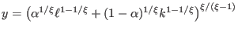
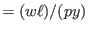
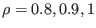

| [ < ] | [ > ] | [ << ] | [ Up ] | [ >> ] | [Top] | [Contents] | [Index] | [ ? ] |
It is possible to use “macro” commands in the ‘.mod’ file for doing the following tasks: including modular source files, replicating blocks of equations through loops, conditionally executing some code, writing indexed sums or products inside equations…
The Dynare macro-language provides a new set of macro-commands which can be inserted inside ‘.mod’ files. It features:
for structure)
if/then/else structures)
Technically, this macro language is totally independent of the basic
Dynare language, and is processed by a separate component of the
Dynare pre-processor. The macro processor transforms a ‘.mod’
file with macros into a ‘.mod’ file without macros (doing
expansions/inclusions), and then feeds it to the Dynare parser. The
key point to understand is that the macro-processor only does
text substitution (like the C preprocessor or the PHP
language). Note that it is possible to see the output of the
macro-processor by using the savemacro option of the
dynare command (see section Dynare invocation).
The macro-processor is invoked by placing macro directives in
the ‘.mod’ file. Directives begin with an at-sign followed by a
pound sign (@#). They produce no output, but give instructions
to the macro-processor. In most cases, directives occupy exactly one
line of text. In case of need, two anti-slashes (\\) at the end
of the line indicates that the directive is continued on the next
line. The main directives are:
@#include, for file inclusion,
@#define, for defining a macro-processor variable,
@#if, @#then, @#else, @#endif for
conditional statements,
@#for, @#endfor for constructing loops.
The macro-processor maintains its own list of variables (distinct of
model variables and of MATLAB/Octave variables). These macro-variables
are assigned using the @#define directive, and can be of four
types: integer, character string, array of integers, array of
strings.
| 4.19.1 Macro expressions | ||
| 4.19.2 Macro directives | ||
| 4.19.3 Typical usages | ||
| 4.19.4 MATLAB/Octave loops versus macro-processor loops |
| [ < ] | [ > ] | [ << ] | [ Up ] | [ >> ] | [Top] | [Contents] | [Index] | [ ? ] |
It is possible to construct macro-expressions which can be assigned to macro-variables or used within a macro-directive. The expressions are constructed using literals of the four basic types (integers, strings, arrays of strings, arrays of integers), macro-variables names and standard operators.
String literals have to be enclosed between double quotes
(like "name"). Arrays are enclosed within brackets, and their
elements are separated by commas (like [1,2,3] or ["US",
"EA"]).
Note that there is no boolean type: false is represented by integer zero and true is any non-null integer.
The following operators can be used on integers:
+, -, *, /
<, >, <=, >=,
==, !=
&&, ||, !
INTEGER1:INTEGER2 (for example, 1:4 is
equivalent to integer array [1,2,3,4])
The following operators can be used on strings:
==, !=
+
s is a string, then
s[3] is a string containing only the third character of
s, and s[4:6] contains the characters from
4th to 6th
The following operators can be used on arrays:
v is an array, then v[2] is its 2nd element
+
-: returns the first operand from which the elements
of the second operand have been removed
v[4:6]
in operator (for example:
"b" in ["a", "b", "c"] returns 1)
Macro-expressions can be used at two places:
.mod file, between an at-sign and curly
braces (like @{expr}): the macro processor will
substitute the expression with its value.
In the following, MACRO_EXPRESSION designates an expression constructed as explained above.
| [ < ] | [ > ] | [ << ] | [ Up ] | [ >> ] | [Top] | [Contents] | [Index] | [ ? ] |
This directive simply includes the content of another file at the place where it is inserted. It is exactly equivalent to a copy/paste of the content of the included file. Note that it is possible to nest includes (i.e. to include a file from an included file).
Example
@#include "modelcomponent.mod" |
Defines a macro-variable.
Example 1
@#define x = 5 // Integer
@#define y = "US" // String
@#define v = [ 1, 2, 4 ] // Integer array
@#define w = [ "US", "EA" ] // String array
@#define z = 3 + v[2] // Equals 5
@#define t = ("US" in w) // Equals 1 (true)
|
Example 2
@#define x = [ "B", "C" ]
@#define i = 2
model;
A = @{x[i]};
end;
|
is strictly equivalent to:
model; A = C; end; |
Conditional inclusion of some part of the ‘.mod’ file.
The lines between @#if and the next @#else or
@#end is executed only if the condition evaluates to a
non-null integer. The @#else branch is optional and, if
present, is only evaluated if the condition evaluates to 0.
Example
Choose between two alternative monetary policy rules using a macro-variable:
@#define linear_mon_pol = 0 // or 1 ... model; @#if linear_mon_pol i = w*i(-1) + (1-w)*i_ss + w2*(pie-piestar); @#else i = i(-1)^w * i_ss^(1-w) * (pie/piestar)^w2; @#endif ... end; |
Loop construction for replicating portions of the ‘.mod’ file. Note that this construct can enclose variable/parameters declaration, computational tasks, but not a model declaration.
Example
model;
@#for country in [ "home", "foreign" ]
GDP_@{country} = A * K_@{country}^a * L_@{country}^(1-a);
@#endfor
end;
|
is equivalent to:
model; GDP_home = A * K_home^a * L_home^(1-a); GDP_foreign = A * K_foreign^a * L_foreign^(1-a); end; |
Asks the preprocessor to display some message on standard output. The argument must evaluate to a string.
Asks the preprocessor to display some error message on standard output and to abort. The argument must evaluate to a string.
| [ < ] | [ > ] | [ << ] | [ Up ] | [ >> ] | [Top] | [Contents] | [Index] | [ ? ] |
| 4.19.3.1 Modularization | ||
| 4.19.3.2 Indexed sums or products | ||
| 4.19.3.3 Multi-country models | ||
| 4.19.3.4 Endogeneizing parameters |
| [ < ] | [ > ] | [ << ] | [ Up ] | [ >> ] | [Top] | [Contents] | [Index] | [ ? ] |
The @#include directive can be used to split ‘.mod’ files
into several modular components.
Example setup:
Contains variable declarations, model equations and shocks declarations
Includes ‘modeldesc.mod’, calibrates parameters and runs stochastic simulations
Includes ‘modeldesc.mod’, declares priors on parameters and runs bayesian estimation
Dynare can be called on ‘simul.mod’ and ‘estim.mod’, but it makes no sense to run it on ‘modeldesc.mod’.
The main advantage is that it is no longer needed to manually copy/paste the whole model (at the beginning) or changes to the model (during development).
| [ < ] | [ > ] | [ << ] | [ Up ] | [ >> ] | [Top] | [Contents] | [Index] | [ ? ] |
The following example shows how to construct a moving average:
@#define window = 2
var x MA_x;
...
model;
...
MA_x = 1/@{2*window+1}*(
@#for i in -window:window
+x(@{i})
@#endfor
);
...
end;
|
After macro-processing, this is equivalent to:
var x MA_x;
...
model;
...
MA_x = 1/5*(
+x(-2)
+x(-1)
+x(0)
+x(1)
+x(2)
);
...
end;
|
| [ < ] | [ > ] | [ << ] | [ Up ] | [ >> ] | [Top] | [Contents] | [Index] | [ ? ] |
Here is a skeleton example for a multi-country model:
@#define countries = [ "US", "EA", "AS", "JP", "RC" ]
@#define nth_co = "US"
@#for co in countries
var Y_@{co} K_@{co} L_@{co} i_@{co} E_@{co} ...;
parameters a_@{co} ...;
varexo ...;
@#endfor
model;
@#for co in countries
Y_@{co} = K_@{co}^a_@{co} * L_@{co}^(1-a_@{co});
...
@# if co != nth_co
(1+i_@{co}) = (1+i_@{nth_co}) * E_@{co}(+1) / E_@{co}; // UIP relation
@# else
E_@{co} = 1;
@# endif
@#endfor
end;
|
| [ < ] | [ > ] | [ << ] | [ Up ] | [ >> ] | [Top] | [Contents] | [Index] | [ ? ] |
When doing the steady state calibration of the model, it may be useful to consider a parameter as an endogenous (and vice-versa).
For example, suppose production is defined by a CES function:

The labor share in GDP is defined as:
lab_rat

In the model, is a (share) parameter, and
lab_rat is an endogenous variable.
It is clear that calibrating is not straigthforward; but
on the contrary, we have real world data for lab_rat, and
it is clear that these two variables are economically linked.
The solution is to use a method called variable flipping, which
consist in changing the way of computing the steady state. During this
computation, will be made an endogenous variable and
lab_rat will be made a parameter. An economically relevant
value will be calibrated for lab_rat, and the solution
algorithm will deduce the implied value for .
An implementation could consist of the following files:
This file contains variable declarations and model equations. The code
for the declaration of and lab_rat would look like:
@#if steady var alpha; parameter lab_rat; @#else parameter alpha; var lab_rat; @#endif |
This file computes the steady state. It begins with:
@#define steady = 1 @#include "modeqs.mod" |
Then it initializes parameters (including lab_rat, excluding
, computes the steady state (using guess values for
endogenous, including , then saves values of parameters
and endogenous at steady state in a file, using the
save_params_and_steady_state command.
This file computes the simulation. It begins with:
@#define steady = 1 @#include "modeqs.mod" |
Then it loads values of parameters and endogenous at steady state from
file, using the load_params_and_steady_state command, and
computes the simulations.
| [ < ] | [ > ] | [ << ] | [ Up ] | [ >> ] | [Top] | [Contents] | [Index] | [ ? ] |
Suppose you have a model with a parameter , and you want to make simulations for three values: . There are several ways of doing this:
rhos = [ 0.8, 0.9, 1]; for i = 1:length(rhos) rho = rhos(i); stoch_simul(order=1); end |
Here the loop is not unrolled, MATLAB/Octave manages the iterations. This is interesting when there are a lot of iterations.
rhos = [ 0.8, 0.9, 1];
@#for i in 1:3
rho = rhos(@{i});
stoch_simul(order=1);
@#endfor
|
This is very similar to previous example, except that the loop is
unrolled. The macro-processor manages the loop index but not the data
array (rhos).
@#for rho_val in [ "0.8", "0.9", "1"]
rho = @{rho_val};
stoch_simul(order=1);
@#endfor
|
The advantage of this method is that it uses a shorter syntax, since list of values directly given in the loop construct. Note that values are given as character strings (the macro-processor does not know floating point values. The inconvenient is that you can not reuse an array stored in a MATLAB/Octave variable.
| [ < ] | [ > ] | [ << ] | [ Up ] | [ >> ] |
This document was generated by Sébastien Villemot on May 24, 2011 using texi2html 1.82.